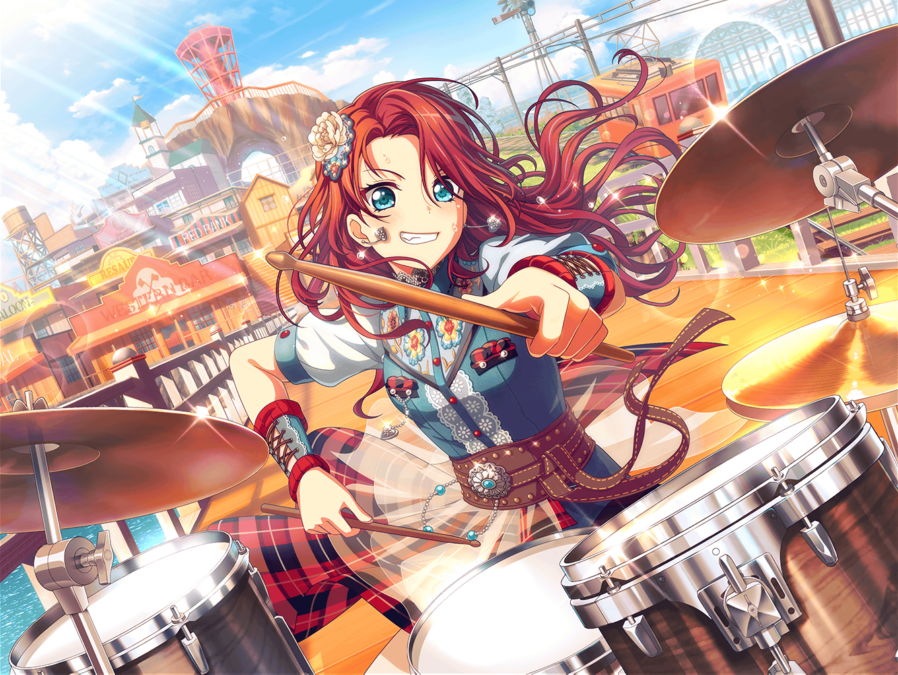

ショッピングモール 本屋
巴
お、{{userName}}さん。
本屋で買い物か？
巴
ん？
ああ、別にアタシは本を買いに
来たわけじゃないんだ
巴
ひまりと待ち合わせしてるんだけど、
遅れるっぽいから、ここで時間潰し
巴
写真集見てれば、時間なんて
あっという間に過ぎるからさ
巴
今見てたのは、これ。
世界の空を集めた写真集なんだ
巴
あ、今つまらなそうって思ったろ？
それが、見始めるとそうでもないんだよ
巴
世界遺産から見た空とか、
有名な山から見た空とか……
巴
ほら、これなんてかっこよくないか？
エーゲ海から見た空
巴
白い建物の屋根が少し写ってて、
空と海の青さのコントラストが
すっごくキレイなんだよ
巴
……こういう色ってさ、
写真集ならではだと思うんだ
巴
今ってパソコンとかスマホでも
外国の写真を見ることはできるけど
やっぱり、印刷だと違うっていうか……
巴
写真集で見る空が、１番現実の色に
似てるんじゃないかって思うんだ
巴
そうそう、写真集つながりなんだけどさ
この前、Afterglowのみんなで
井ノ島に行ってきたんだ
巴
アタシが井ノ島の写真集見てたのがきっかけで
行くことになってさ
巴
{{userName}}さん、
モンサンミッシェルってわかる？
アタシ、井ノ島は日本のモンサンミッシェルだと思うんだよ
巴
島の感じが、なんとなく似ててさ。
あと歴史があるところなんかも
モンサンミッシェルっぽいなって
巴
井ノ島、行ったことあるか？
ないなら、絶対に行った方がいいって！
巴
今の時期もけっこうオススメだよ。
少し寒いけど、空気が澄んでるから
遠くまで景色が楽しめるんだ
巴
イルミネーションとかもあるし、
夏ほど人が多くないから観光もしやすいしさ
巴
井ノ島って海が観光名所って感じの部分があるから
夏のイメージ強いかもしれないけど……
巴
井ノ島の魅力が伝わるのって
空気が澄んでるこの時期だって思ったよ
巴
……本当に行ってよかった
巴
Afterglowのみんなと一緒だったから
余計にそう思えるんだろうな
巴
アタシ、自分のやりたいことをみんなに付き合ってもらうのって
なんとなくニガテでさ。申し訳ないっていうか……
みんな、断らないってわかってるんだけど
巴
今回も、つぐに助けられながらみんなのこと誘ってさ。
みんなで一緒に行けてよかったよ
巴
最初は井ノ島の写真集見て
井ノ島へ行った気になってたけど……
巴
実際に行ってみると井ノ島の空気とか、
波の音とか……お土産屋さんの呼び込みとか……
生きてる井ノ島に触れられてさ
巴
うん、写真集とは違うな。
やっぱり実際に足を運ぶと写真集以上の
感動があるなって思ったんだ
巴
写真集が好きなのって、見ているだけで
そこに行けたような気分になれるからだったんだ。
でも、今回実際その場所に行ってみて……
巴
これからは、実際の場所にもどんどん行ってみたいなって
思ったんだ。……ま、気になってるのは海外ばっかりだから
どれだけ実現できるかわからないけど
巴
うん、もちろん行くときはAfterglowのみんなに
付き合ってもらうよ！
巴
あ、いや……付き合ってもらうんじゃなくて、
一緒に行く、こっちかな
巴
その時はまた話聞いてくれよ、{{userName}}さん